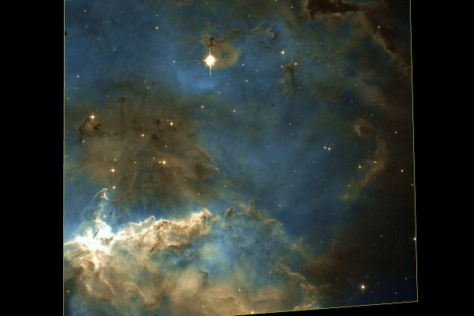

Латинское название: Puppis
Корма - "новое" созвездие южного полушария неба, звезды которого первоначально входили в состав большого созвездия Корабль Арго, известного с древности.
NGC 2467 - область звездообразования со всеми свойственными примечательностями: клочьями и волокнами пыли, подсветкой и прочими красивостями.
